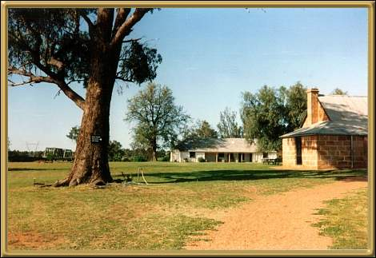

Photographer: Jean Stokes
There is quite a lot that is of historic interest at Dubbo, but I think it's main attraction is the Western Plains Zoo. The zoo covers over 300 hectares of landscaped parks, with animals from all over the world, most of which roam relatively freely in natural surroundings. It's quite a spectacular and beautiful zoo.